20170725-PHP自定义微信分享
工作需要，需要支持页面的微信自定义分享。查阅了一些资料后整理如下。最详尽的资料在微信官方文档微信公众平台，下面是针对PHP微信分享的小结和整理。
前置条件
公众号支持微信自定义分享功能；
首先要确保公众号支持自定义分享功能，具不完全考证，目前（2017.7）微信只支持认证过的公众号有分享功能。查看有无该功能，可在【开发】-【接口权限】中查看。 如图1和图2。
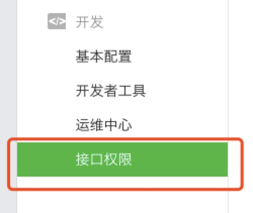
【图1】
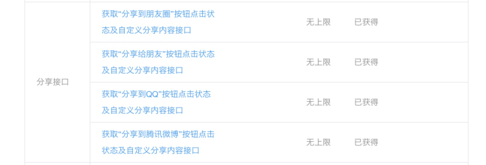
【图2】
公众号添加域名
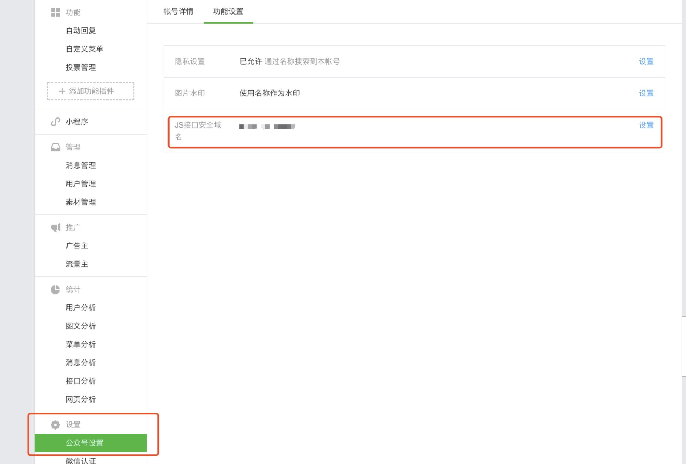
【图3】
如图3，在【设置】-【公众号设置】的【功能设置】Tab页面，选择JS接口安全域名设置。
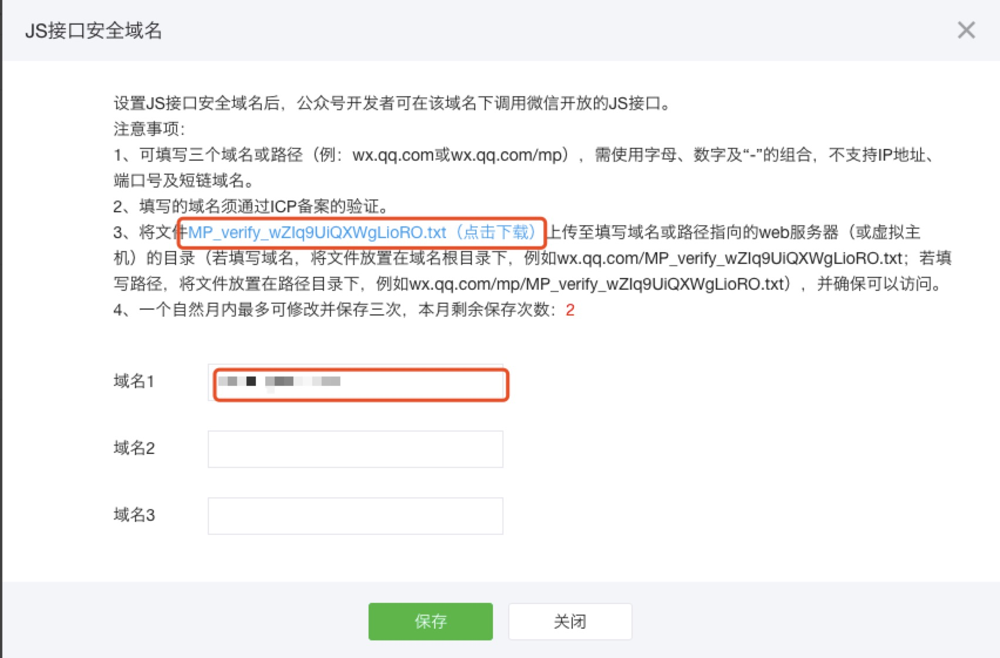
【图4】
在添加JS接口前，如图4，弹出的画面会提醒在域名根目录下添加文件，下载超链接的文件后上传至服务器，并确保路径可以访问后，再添加域名（注域名不带http:， 如http://www.baidu.com 应填写为 www.baidu.com）。
如果可以访问成功且域名有效，便可进行保存。同时会提示将服务器IP添加至白名单，按照提示可添加白名单，如果当时不确定IP地址，也可稍后再条件。
IP白名单添加
获取IP地址
如果已经登录了服务器，可以在命令行输入ifconfig查看本机IP，eth1的inet addr项，如图5。
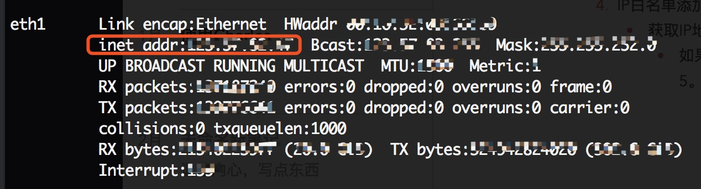
【图5】如果没有登录服务器，可以通过Ping服务器的方式获取服务器IP。如图6。
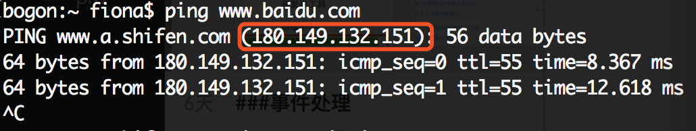
【图6】
设置白名单
在【设置】-【安全中心】里面，选择IP白名单，查看，进行编辑，如图7和图8。
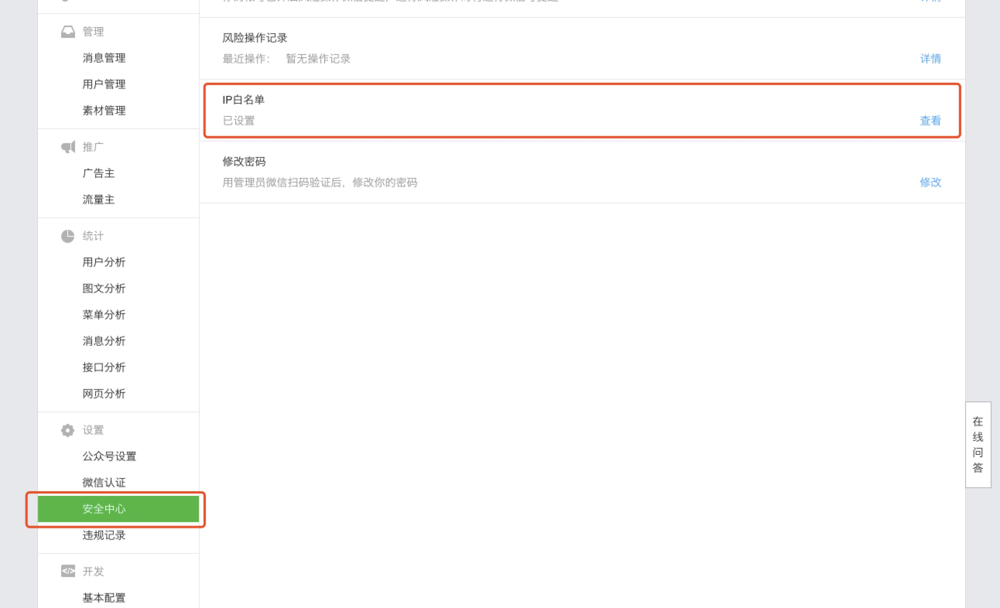
【图7】
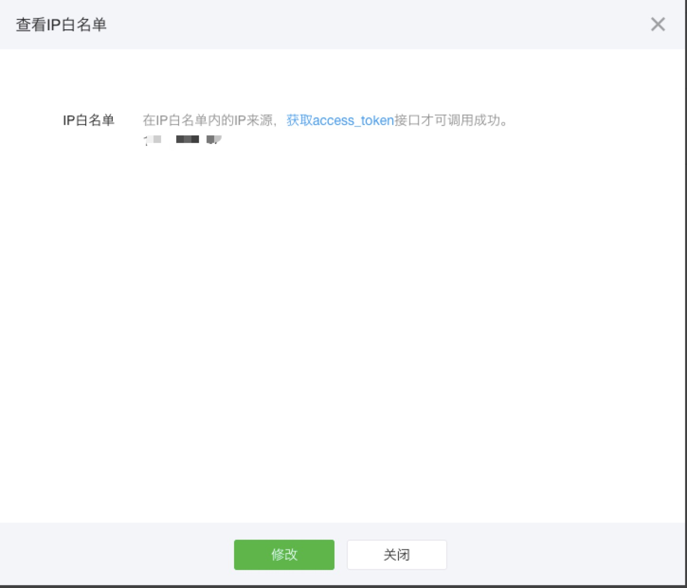
【图8】
代码部分
代码目录结构
示例代码给的结构前端PHP和后端处理代码在同一个目录结构下，实际项目中可根据需求进行修改。图9是一个示例：
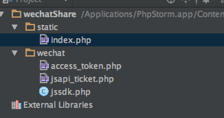【图9】后台代码
后台代码是示例代码的jssdk.php文件，里面向微信请求了access_token和ticket，微信示例代码中，将请求的结果写在文件里面进行缓存，每次调用分享时，从文件中读取有效时间，如果超时再重新请求。
前台代码
appId和appSecret替换
前台代码是示例中的sample.php，其中需要注意的是appId，和appSecrect需要进行替换。appId在微信公众平台【设置】-【基本配置】里面，如图10，图11。
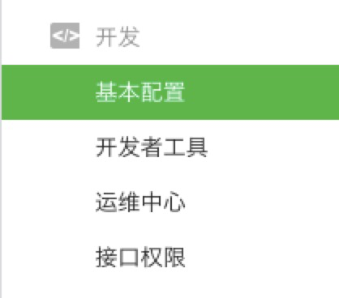
【图10】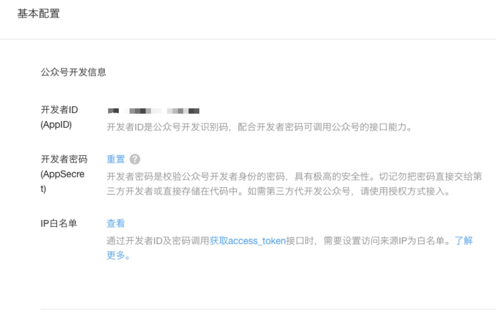
【图11】代码部分，如图12。
第一步需要替换appId和appSecret，第二步需要填充自己需要的apilist，第三步是设置分享的调用函数。注意下面的代码是开了debug的，如果最终在正式环境上调用，需要把config.debug 设置为false。
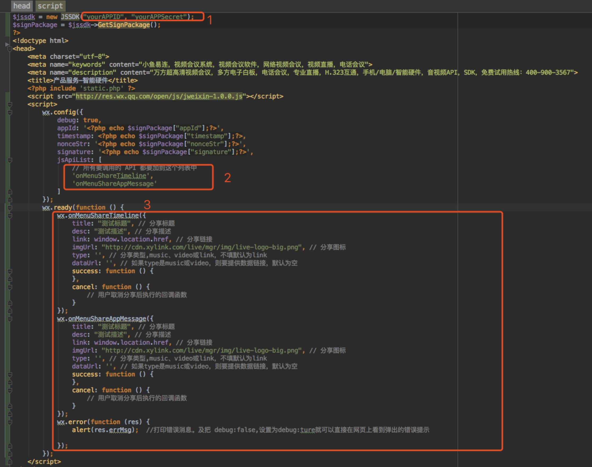
【图12】
结语
以上就是最基础的PHP微信分享步骤，希望有所帮助。
参考
微信公众平台
微信公众平台JSSDK分享接口开发（PHP实现） - w2ex - SegmentFault
PHP实现微信分享朋友圈demo